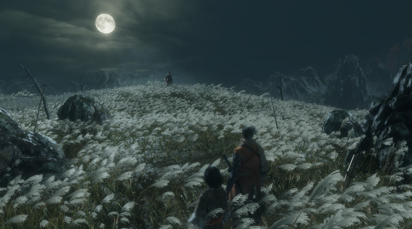

1 ADS-A
Olá! Meu nome é Jorge Luiz, e sou um apaixonado por tecnologia e
videogames.
Desde pequeno, sempre vi os jogos como muito mais do que
simples entretenimento. Eles foram mestres silenciosos que me
ensinaram sobre persistência, estratégia e criatividade.
Hoje,
canalizo essa paixão para o desenvolvimento de projetos
interativos e estudos, buscando recriar um pouco da magia que sempre me
inspirou.
No início de 2025, durante a virada do ano, sofri um acidente que
mudou completamente minha vida: quebrei o fêmur da perna direita.
Fiquei impossibilitado de andar por mais de um mês e acabei perdendo
momentos importantes, como a minha formatura e o meu aniversário.
Naquele período, comecei a acreditar que estava em um azar sem fim,
que as oportunidades que perdi dificilmente voltariam e que eu estava
sem rumo.
Foi nesse tempo de recuperação, enquanto ainda estava com a perna
quebrada, que comecei a jogar intensamente Hades. E foi ali, entre as
idas e voltas do Submundo, que encontrei algo que me ajudou a enxergar
as coisas de outra forma e essa ideia
começou a refletir na minha própria vida, mudando completamente minha
forma de pensar sobre aquele momento difícil.
Este projeto nasceu da minha conexão com o jogo Hades e do que ele
significou durante minha recuperação. Enquanto eu estava
impossibilitado de andar, Hades me ensinou que cada queda pode ser uma
chance de aprender e voltar mais forte.
Mais do que um jogo sobre batalhas, ele mostra o valor da
persistência, da estratégia e da superação. Cada tentativa é uma
lição, e esse mesmo ciclo está presente aqui, em cada linha de código
e em cada erro corrigido.
Com este projeto, quero representar o
espírito de Hades:
A ideia de que o progresso não vem da sorte, mas da forma como
escolhemos lutar e aprender com o que temos.

Celeste me ensinou sobre autoaceitação, superação e autoconhecimento. A jornada de Madeline me mostrou que muitas das nossas batalhas são internas e que reconhecer nossas fraquezas é o primeiro passo para vencê-las.Aprendi com esse jogo a seguir em frente mesmo nas quedas e que falhar faz parte do caminho até o topo.
Sekiro: Shadows Die Twice me ensinou o valor da persistência. Sua dificuldade impiedosa me fez entender que crescer exige paciência e repetição e que cada derrota traz consigo uma nova lição.

Monster Hunter me mostrou o poder da dedicação e do trabalho em equipe. Cada caçada exige estratégia, cooperação e preparo, e me ensinou que o sucesso raramente vem sozinho. Aprendi a importância de entender meus limites, planejar com calma e celebrar as conquistas em grupo, algo que levo também para minha vida e meus projetos.
Minhas primeiras lembranças com videogames vêm de 2012, quando ganhei da minha mãe um Nintendo 3DS.
Tenho ele guardado até hoje, junto com fotos e o primeiro jogo que me introduziu a esse mundo:
Pokémon X.
Lembro perfeitamente das minhas aventuras ao lado do meu Pokémon favorito, Charizard, e de como
aquele jogo despertou minha paixão por esse universo.
Foi ali que começou tudo, minha curiosidade, meu senso de descoberta e o desejo de entender como
esses mundos incríveis eram criados.